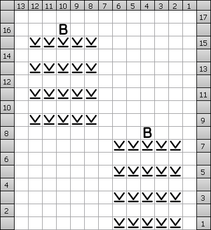
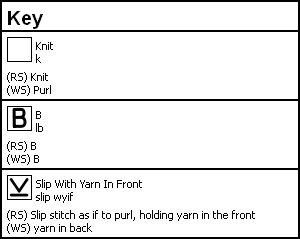

Karma Blokje Week 47
We vliegen alle kanten op
Ook beschikbaar als PDF Document
We meanderen graag in de Karma groep, onze gesprekken gaan soms van de hak op de tak en we zijn niet bang om off-topic te gaan. Dat geeft vrijheid om een gesprek door te laten lopen op de plek waar het is ontstaan, zonder het te hoeven onderbreken en naar een ander draadje te verplaatsen.
Het zoemt in alle draadjes, de hele groep gonst ervan.
Vandaar een blokje met meanderende ribbels en zoemende bijtjes.
Dit is door de ribbels die je breit een erg rekbaar blokje. Maar als je 'm een beetje oprekt dan komt ie best wel op 20x20 terecht.
De achter insteken ribbelsteek is het fijnste te breien met een beetje scherpe naald.
Als je er niet goed uitkomt met de kruisende ribbelsteek in toer 1 en 2 dan kan je de techniek hier on foto's bekijken:
http://www.purlbee.com/the-purl-bee/2011/11/15/whits-knits-rick-rack-scarf.html
-
Cast on 37 sts
-
Row 1: (right side): P1, *skip first stitch, knit into back loop of second stitch (leaving stitch on left needle), knit into front of first stitch (removing both stitches from left needle), p1, repeat from * to end of row.
-
Row 2: (wrong side): K1, ^purl into second stitch (leaving stitch on left needle), purl into first stitch (removing both stitches from left needle), k1, repeat from ^ to end of row.
-
Repeat row 1+2 another 14 times
-
Row 3: P1, ^skip first stitch, knit into back loop of second stitch (leaving stitch on left needle), knit into front of first stitch (removing both stitches from left needle), p1,^ repeat between ^^ 3 more times minus the last p1, knit next 13 sts from the chart, repeat between ^^ 4 times.
-
Row 4: (wrong side): K1, ^purl into second stitch (leaving stitch on left needle), purl into first stitch (removing both stitches from left needle), k1, repeat between ^^ 3 more times minus the last k1, purl next 13 sts from the chart, repeat between ^^ 4 times.
-
Repeat row 3 + 4 another 15 times to complete the chart.
-
Repeat row 1+2 15 times, then bind off.
Bee chart:


B – stitch:
WS: pick up the floats from the rows before from behind and lift them on to the left needle, purl the 4 floats together with the next stitch